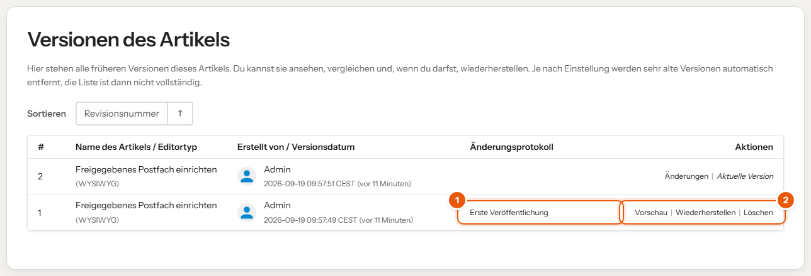

Änderungen werden erst mit dem Speichern für alle sichtbar, und jede frühere Fassung bleibt erhalten. Nichts, was du tust, lässt sich nicht rückgängig machen.
Entwurf und Speichern
- Während du schreibst, sichert das Wiki automatisch einen Entwurf. Den siehst nur du; er steht auf der Startseite rot unter „Meine Entwürfe“.
- Erst mit Artikel speichern wird die Änderung für alle sichtbar.
- Über Änderungsprotokoll hinzufügen schreibst du kurz dazu, was sich geändert hat, zum Beispiel „Schritt 3 für neues Admin Center angepasst“.

Eine kurze Änderungsnotiz hilft allen: In den Versionen sieht man dann auf einen Blick, wer wann was geändert hat.
Frühere Version zurückholen
- Artikel öffnen, rechts unter „Details“ auf Version #… oder oben in der Aktionsleiste auf das Uhr-Symbol Versionen klicken.
- Bei der gewünschten Fassung Vorschau oder Änderungen ansehen.
- Wiederherstellen wählen und bestätigen.

- Änderungsprotokoll: die Notiz, die beim Speichern eingetragen wurde.
- Aktionen je Fassung: Vorschau, Wiederherstellen, Löschen.
Wiederherstellen legt eine neue Version an. Nichts geht verloren, auch die zwischenzeitliche Fassung bleibt in der Liste.
Gleichzeitig bearbeiten
Bearbeitet jemand anderes denselben Artikel, zeigt der Editor oben einen Hinweis. Sprecht euch dann kurz ab, sonst überschreibt der zuletzt Speichernde die Änderungen des anderen.
Gelöscht?
Gelöschte Artikel landen im Papierkorb. Die Redaktion kann sie wiederherstellen.